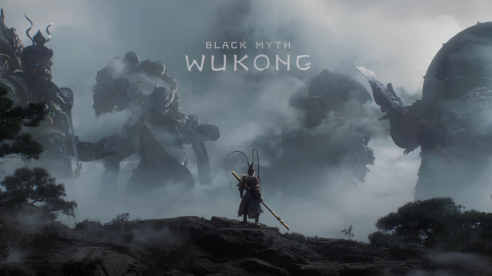

壁纸分享：精选高质量桌面背景
壁纸分享：精选高质量桌面背景
分享心得
最近收集了一组非常精美的壁纸，涵盖了多种风格，从自然风景到科幻机械，再到动漫角色，每一张都有其独特的魅力。这些壁纸不仅可以美化你的桌面，还能在工作学习之余给你带来视觉上的享受和灵感。
好的壁纸就像一件艺术品，能够反映出使用者的个性和品味。我个人特别喜欢那些融合了自然元素与创意设计的作品，它们既能够营造出宁静的氛围，又不会显得单调乏味。
壁纸展示
云彩-山脉-日落
这张壁纸展现了壮观的日落景象，云彩被夕阳染成了金黄色，与远处的山脉形成了鲜明的对比。整体色调温暖而富有层次感，适合喜欢自然风景的朋友。
云雾-孙悟空-暗黑
这张壁纸采用了暗黑风格，孙悟空在云雾中若隐若现，展现出一种神秘而强大的气场。整体画面充满了动感和张力，适合喜欢中国风与奇幻元素的朋友。

兔子警官朱迪-撕裂缝隙
这张壁纸以《疯狂动物城》中的兔子警官朱迪为主题，通过撕裂缝隙的设计手法，创造出一种打破次元壁的视觉效果。整体风格活泼有趣，适合喜欢动漫角色的朋友。
墨镜-尼克-度假
这张壁纸同样来自《疯狂动物城》，展现了尼克戴着墨镜度假的场景。整体色调明亮欢快，营造出一种轻松愉悦的氛围，适合喜欢休闲风格的朋友。
天空-机动战士-机械
这张壁纸融合了科幻元素，机动战士在天空中翱翔，机械感十足。整体画面充满了未来感和冲击力，适合喜欢科幻题材的朋友。

清晨-雪山
这张壁纸展现了清晨的雪山景象，阳光洒在雪山上，形成了美丽的光影效果。整体画面宁静而壮观，适合喜欢简约自然风格的朋友。
结语
希望这些壁纸能够为你的桌面增添一份独特的美感。如果你有喜欢的风格，欢迎在评论区留言分享。也期待未来能够收集到更多精美的壁纸作品，与大家一起分享。
最后，祝大家每天都有好心情！
💬 评论区